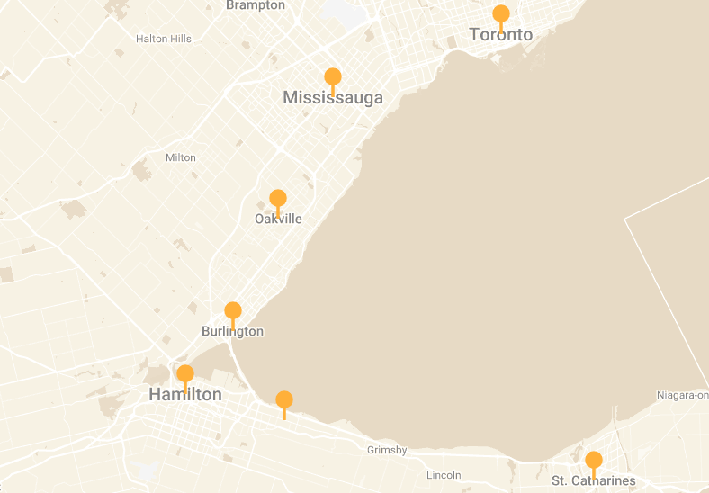

Your child’s tutor sat the same exam two years ago — and aced it.
Every NxtEd tutor is a university student who recently took the course your child is taking now. They remember what was confusing, what the tests actually ask, and how to get through it — and they’re close enough in age that kids listen.
Find help in your subject
These are the courses our current tutors actually cover. If yours isn’t listed, ask — we’ll tell you honestly whether we can help.
All subjects and grades →One tutor away, wherever your child is in the GTA — or online everywhere else.
In person across Toronto, Mississauga, Oakville, Hamilton and St. Catharines — usually at a library or another public spot. Online, we work with families anywhere.

The people who’ll actually be teaching
Small team, real names. You’ll know exactly who your child is meeting before the first session starts.
Three steps, and the first one costs nothing
What parents ask first
If yours isn’t here, call or text (226) 388-9789 and you’ll get a straight answer.
{{ f.q }}
{{ f.a }}
Tell us the grade and the subject. We’ll match a tutor and book the first session at no cost — usually within a day.